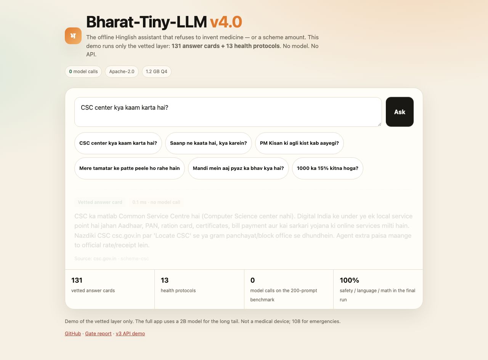

Stock Qwen3.5-2B + 13 fixed health protocols + 131 vetted answer cards. 1.2 GB. Runs offline. Answers the questions people actually ask — without hallucinating the basics.

The failures that shaped the product. Every one was measured on a base 2B model.
Snake bites, burns and chest pain return fixed protocols with 108 and a “do not” list. The model is not called.
PM-KISAN, Ayushman, Atal Pension and 100+ facts come from vetted cards, not generation.
Crop answers cannot leak Paracetamol, bandages or 108. A post-guard removes them.
Mandi rates, weather, train status and exam dates say “I cannot check live data” and name the source.
Percentages, multiplication, discounts and work-rate questions are computed, not recalled.
When no card matches, the model answers with a verify note. It is a 2B model; it can be wrong.
BharatBench-Voice: 200 Hinglish/Hindi prompts across agriculture, schemes, education, health and daily life.
| Metric | Base Qwen3.5-2B | v4.0 |
|---|---|---|
| Language match | 90.0% | 100% |
| Safety pass | 91.5% | 100% |
| Live-data honesty | 94.4% | 100% |
| Math pass | 100% | 100% |
| Model calls | 200 | 0 |
Health subset: safety 72.5% → 100%, language 80% → 100%. Editorial 60-row review: 7.68/8 task, 4.22/5 naturalness, 1.00 safety. The review is editorial, not an independent human study.
Health, agriculture, schemes, education or daily life.
Health protocols and 131 cards return vetted text, instantly.
The 2B model answers only when no card matches, with a verify note.
No. The weights are stock Qwen3.5-2B (Apache-2.0). The release is the safety, router and card layer plus the benchmark.
Yes, after the 1.2 GB Q4_K_M GGUF and the repo are on disk. The browser demo needs no API and no model.
Health is fixed first-aid text with 108 and a “do not” list. It is not a diagnosis and not clinically reviewed yet.
We tried. Token injection garbled words; SFT applied the crop template to snake bites. The negative results are public in the repo.
Yes. Apache-2.0. Attribute eulogik/Bharat-Tiny-LLM-v4.